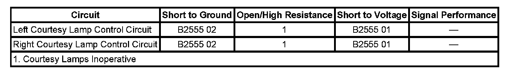

B2555
DTC B2555
DTC DESCRIPTOR
DTC B2555 01
Passenger Compartment Lamp Control Circuit Short to Battery
DTC B2555 02
Passenger Compartment Lamp Control Circuit Short to Ground
DIAGNOSTIC FAULT INFORMATION

Perform the Diagnostic System Check - Vehicle prior to using this diagnostic procedure. Initial Inspection and Diagnostic Overview
CIRCUIT/SYSTEM DESCRIPTION
When the body control module (BCM) signals for courtesy lamp operation, a message is sent over the GM LAN serial data circuit to the driver door and passenger door switches. The driver door switch and passenger door switch the applies battery voltage to the left and right courtesy lamp control circuits illuminating the door courtesy lamps. The driver door and passenger door switches also provide ground to the lamps.
CONDITIONS FOR RUNNING THE DTC
- Battery voltage must be between 9-16 volts.
- A message is sent from the BCM over the GM LAN serial data circuit to the driver door and passenger door switches to active the door courtesy lamps.
CONDITIONS FOR SETTING THE DTC
- DTC B2555 01 will set when the driver or passenger door switch detects a short to voltage in the courtesy lamp control circuit.
- DTC B2555 02 will set when the driver or passenger door switch detects a short to ground in the courtesy lamp control circuit.
ACTION TAKEN WHEN THE DTC SETS
- When DTC B2555 01 is present, the door courtesy lamps will remain illuminated.
- When DTC B2555 02 is present, the door courtesy lamps will be inoperative.
CONDITIONS FOR CLEARING THE DTC
- The condition responsible for setting the DTC no longer exists.
- A scan tool CLEAR DTCs command is issued for that switch module.
- A history DTC will clear once 100 consecutive malfunction-free ignition cycles have occurred.
CIRCUIT/SYSTEM TESTING
1. Disconnect the driver or passenger door harness connector C2 as applicable.
2. Connect a test lamp between the courtesy lamp control circuit terminal 10 at the door harness connector and ground.
- If the test lamp illuminates, locate and repair a short to voltage in the courtesy lamp control circuit.
- If the test lamp does not illuminate, locate and repair a short to ground in the courtesy lamp control circuit.
3. If circuits test OK, replace the driver or passenger door switch as applicable.
REPAIR INSTRUCTIONS
Perform the Diagnostic Repair Verification after completing the diagnostic procedure.
Control Module References for driver or passenger door switch replacement, setup, and programming. Verification Tests Programming and Relearning